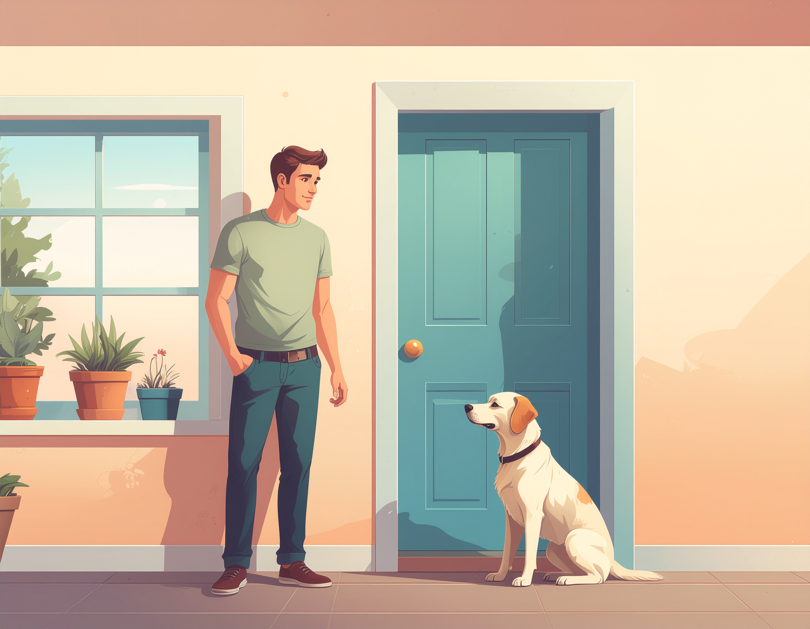

Hjælp jeg har fået hund!
Alt det du burde vide om livet med hund – helst før den flyttede ind, men nu står du her alligevel, klar med godbidder, google-søgninger og tålmodighed, mens hunden tester dine grænser én logrende dag ad gangen.